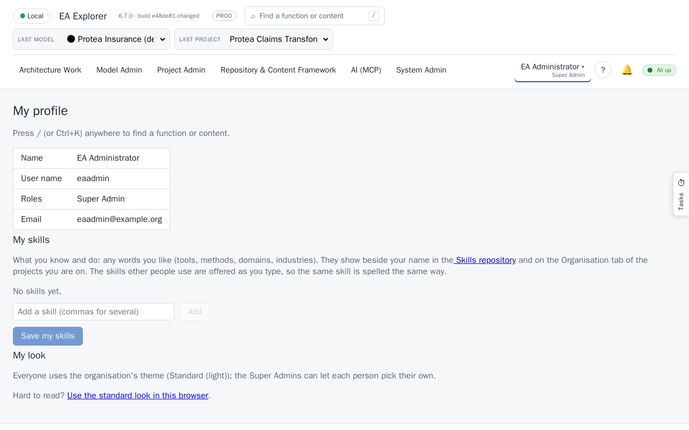

Change your profile and skills
For: Practising architects
Your name, picture, skills and how you are told about things.

#/my-profileWhy do this
Your profile says who you are and how you want to be told about things; your skills feed the skills repository the practice uses to plan who works on what.
Access in EA Explorer is layered so each owner decides for their own part: System Admins for the installation, Model Admins for models, Project Admins for projects. Most people need only a few roles to do their work.
In TOGAF terms: The Preliminary phase's architecture capability: who does architecture work and with what authority. Sign-in itself is outside the method. See EA Explorer and the TOGAF Standard.
The goal: Others know who you are and what you are good at.
Steps
- Open Home › My profile and skills.
- Change your details and your skills.
- Save.